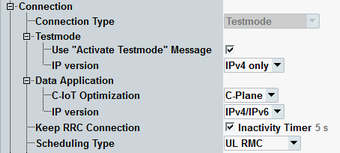

This section describes the following "Connection" settings.

Configures the connection type to be applied at the R&S CMW.
"Testmode" | The test mode uses only layer 1 and 2 of the protocol stack. Layer 3 is not used. This mode is suitable for any signaling tests not involving the data application unit (DAU). For the attach, the signaling application uses control plane CIoT optimization, as defined in 3GPP TS 36.508. |
"Data Application" | The data application mode supports also layer 3, required for IP-based services. Select this mode for data application measurements with the DAU. This value requires an installed DAU. |
This node configures settings for the test mode.
When enabled, an "ACTIVATE TEST MODE" message is sent to the UE in "Testmode". No loop mode is requested. Test modes are specified in 3GPP TS 36.509 and 36.508.
Remote command:Specifies which IP versions are allowed in test mode.
"IPv4 only" | Only IPv4 allowed. IPv6 is not used, even if requested by the UE. This value is recommended. |
"IPv4/IPv6" | Both IPv4 and IPv6 are allowed. The IP versions are used as requested by the UE. |
This node configures settings for the data application mode.
Selects the C-IoT optimization type to be used for the attach: user plane or control plane C-IoT optimization.
The C-IoT optimization types are defined in 3GPP TS 36.508.
Remote command:Specifies which IP versions are allowed in data application mode.
"IPv4/IPv6" | Both IPv4 and IPv6 are allowed. The IP versions are used as requested by the UE. |
"IPv4 only" | Only IPv4 allowed. IPv6 is not used, even if requested by the UE. |
"IPv6 only" | Only IPv6 allowed. IPv4 is not used, even if requested by the UE. |
Selects whether the RRC connection is kept or released after attach.
"Enabled" | The RRC connection established during attach is kept when the attach procedure is completed. For a subsequent connection setup, the already established RRC connection is used. So the connection setup is faster. After a disconnect, the RRC connection is still kept. |
"Disabled" |
|
Selects the channel type to be scheduled for the UE.
"UL RMC" | The instrument allocates a 3GPP-compliant reference measurement channel for UL tests (3GPP TS 36.521, chapter 6). For configuration, see "UL RMC Connection Settings". |
"DL RMC" | The instrument allocates a 3GPP-compliant reference measurement channel for DL tests (3GPP TS 36.521, chapter 7 and 8). For configuration, see "DL RMC Connection Settings". |
"User defined" | User-defined scheduling, with configurable DL/UL pattern. For configuration, see "User-Defined Scheduling Settings". |